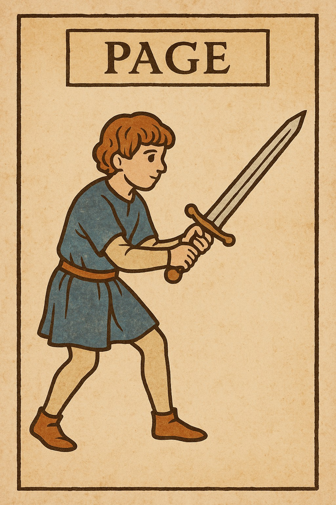
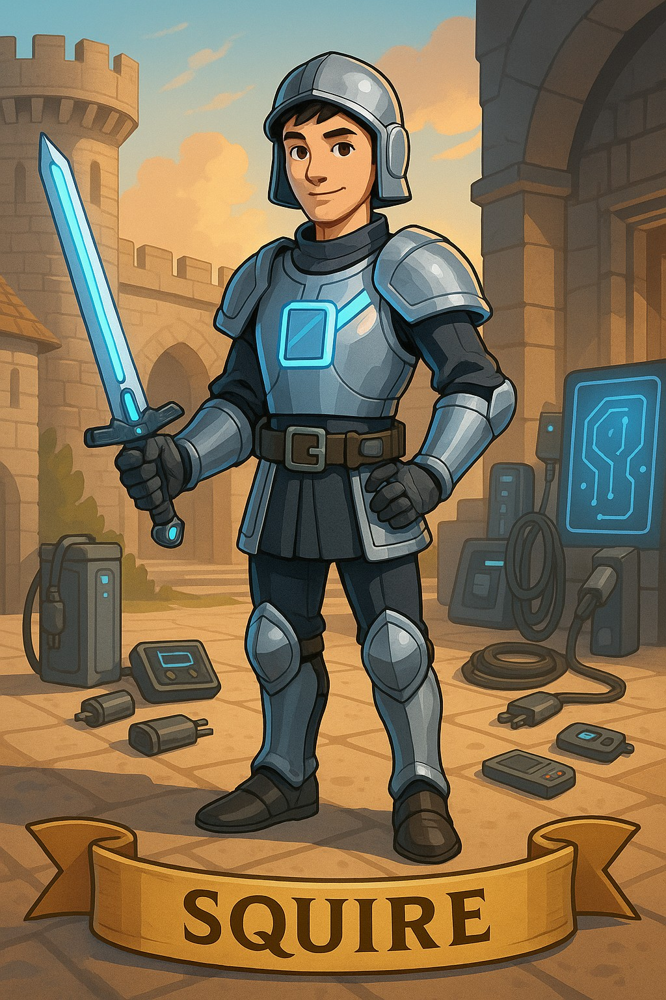
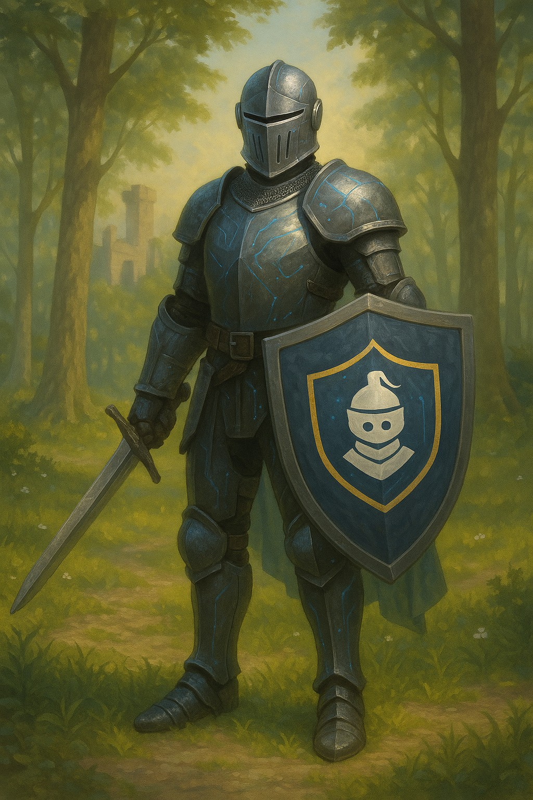

🛡️
Paige
Beginner · 0–200 XP

⚔️
Squire
Intermediate · 200–500 XP

👑
Knight
Advanced · 500+ XP
Now Live
⚔️ Play Security Knights
The training program is now a fully interactive game. Solve 15 real security challenges across Paige, Squire, and Knight ranks. Earn XP, unlock badges, and consult Merlin the AI Wizard for hints and explanations — powered by Claude.
15 Challenges
OWASP Top 10
AI Wizard
XP + Badges
Progress Saved
Enter the Castle
Demo mode · No key required
Introduction▾
A gamified secure development training program structured around medieval ranks — Paige, Squire, and Knight.
The live version features 15 interactive challenges covering OWASP Top 10, a Claude-powered AI mentor (Merlin the Wizard),
XP-based progression, and badge rewards.
Description▾
Designed to embed security culture into developer workflows through engaging learning paths, hands-on code review challenges,
and badge-based progress. Each challenge presents real vulnerability scenarios with code examples. Merlin the Wizard
(powered by Claude) provides hints, explanations, and real-world attack examples on demand.
Objective▾
To enhance secure coding awareness and reduce vulnerabilities in the SDLC by making security training genuinely fun.
Progress is saved locally — developers can train at their own pace and pick up where they left off.
Process▾
Created course content based on OWASP Top 10 → facilitated secure code review sessions → collaborated with engineering leads →
iterated on feedback → built interactive challenge engine with XP system → integrated Claude AI as Merlin the Wizard for
contextual hints and explanations.
Tools & Technologies▾
- HTML, CSS & JavaScript – Full challenge engine with XP system and badge awards.
- Anthropic Claude API – Powers Merlin the Wizard for real-time hints and explanations.
- localStorage – Progress, XP, rank, and badges persist across sessions.
- OWASP Top 10 – All 15 challenges are grounded in real OWASP vulnerabilities.
- GitHub Pages – Static hosting, zero backend required.
- Uncial Antiqua / Cinzel – Medieval typography for immersive theming.
Value Proposition▾
Improved developer security skills by embedding security earlier in the development lifecycle — through challenge,
reward, and an AI coach that meets developers where they are, not where a textbook assumes they should be.
Unique Value▾
Fun, themed, and gamified — increases participation and retention. The medieval metaphor (dark sorcery for vulnerabilities,
shields for defenses) makes abstract security concepts memorable. The AI wizard means no developer is ever stuck
without guidance.
Relevance▾
Perfect for modern AppSec strategies where developers are the first line of defense. With AI-assisted
development accelerating code production, developers who understand security at a gut level are more
valuable than ever.
"I finally understood OWASP Top 10 thanks to Security Knights — and it was fun!"
Impact Metrics (Mock)
- ✅ 92% of devs passed the OWASP secure code quiz
- ✅ 3× increase in secure PRs
- ✅ 100% badge participation